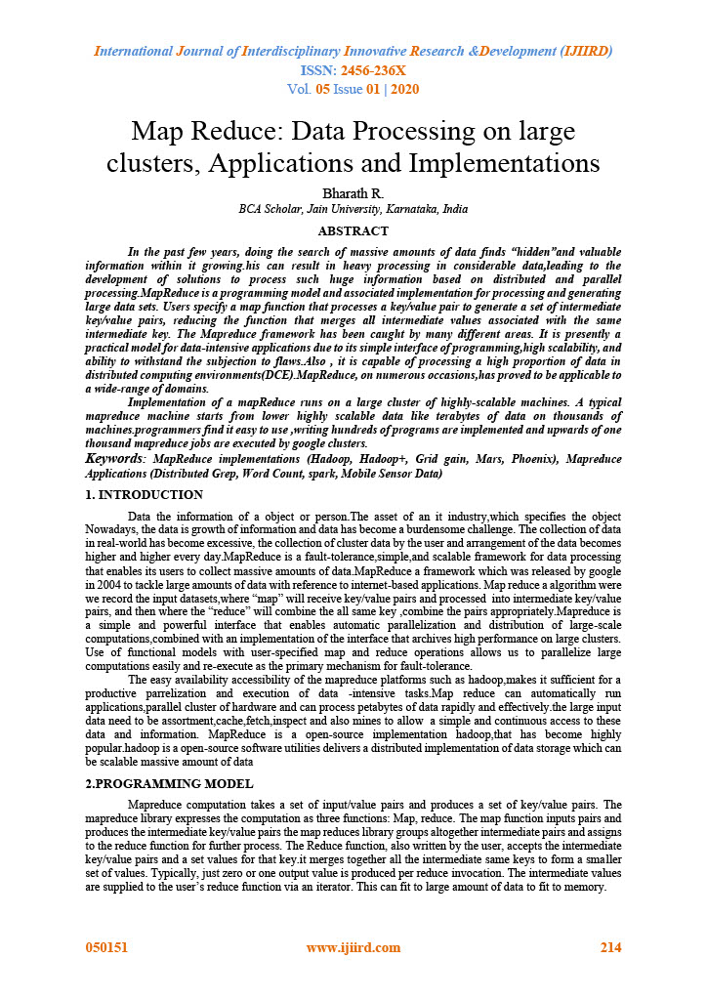
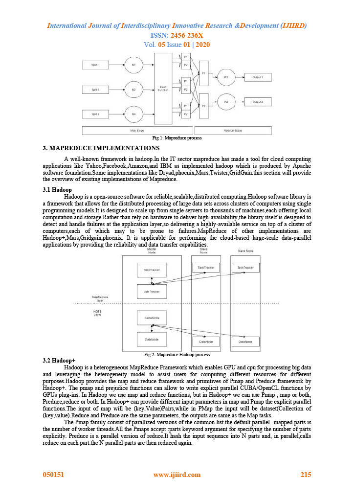
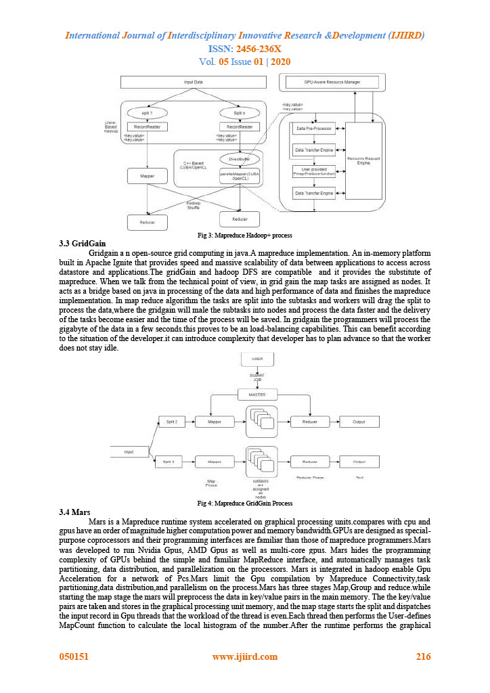
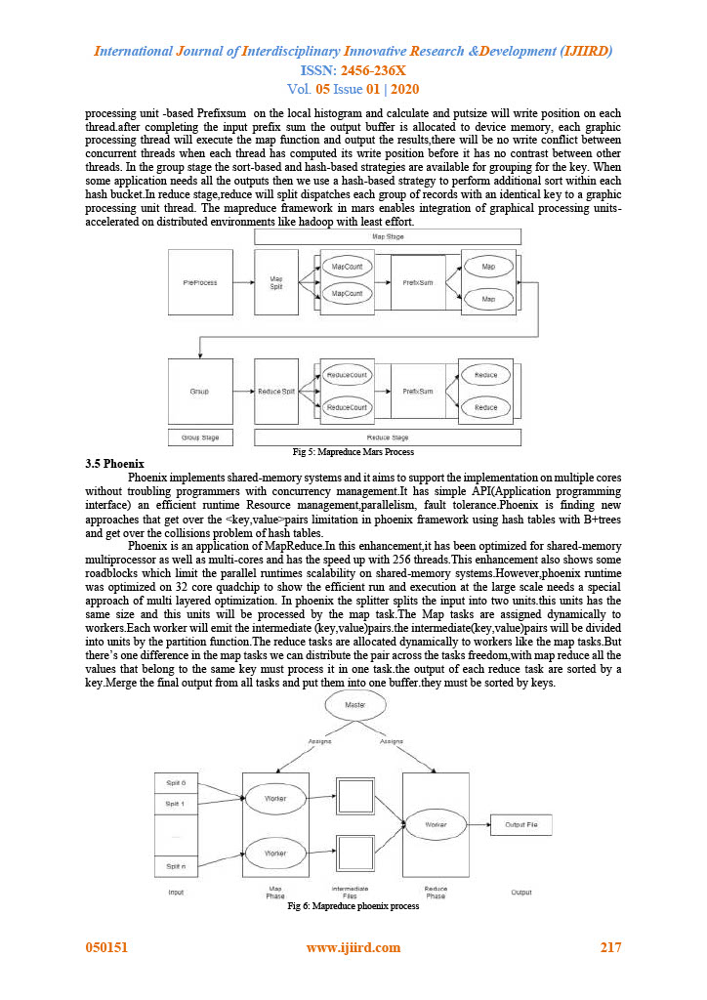
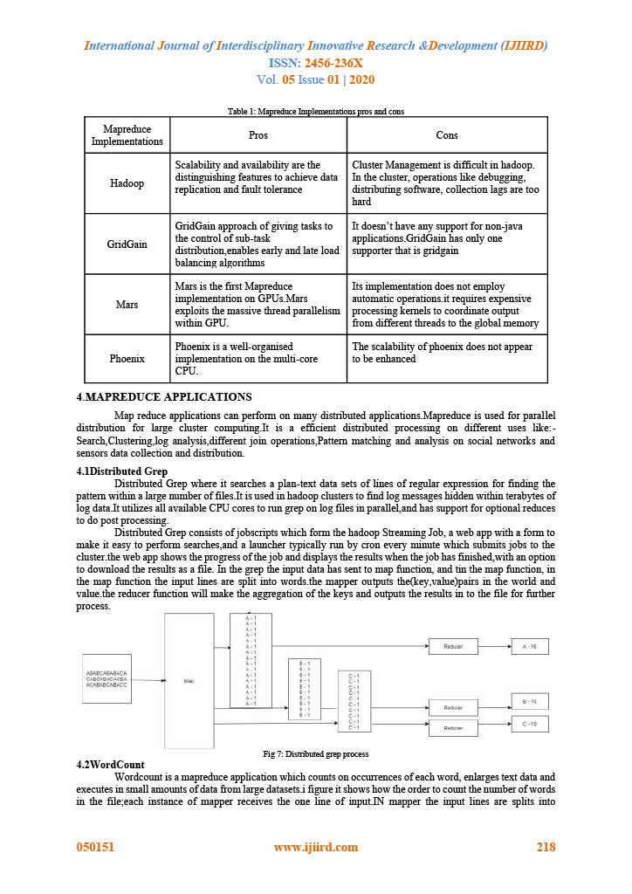
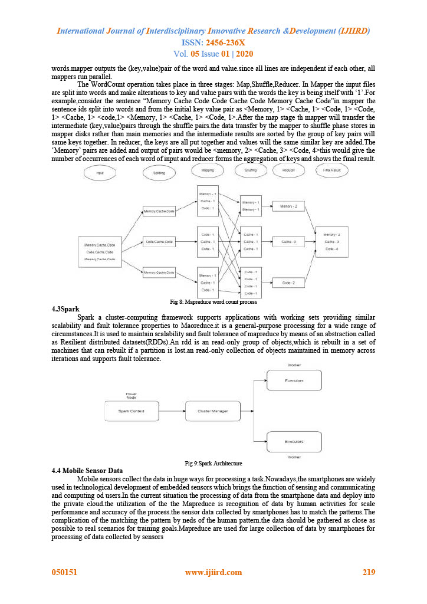
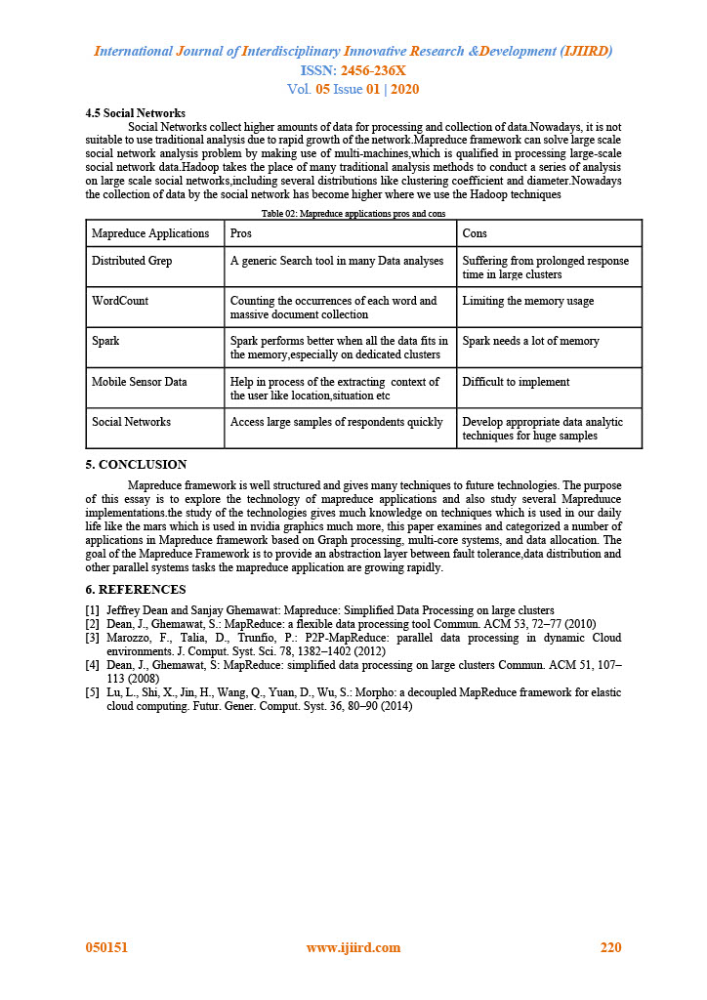

home
about me
cv
publication
certification
Publication
Mapreduce: Data Processing in large clusters
Applications and Implementations
by Bharath R
Dec 17, 2021
10 min read
Download as pdf
      